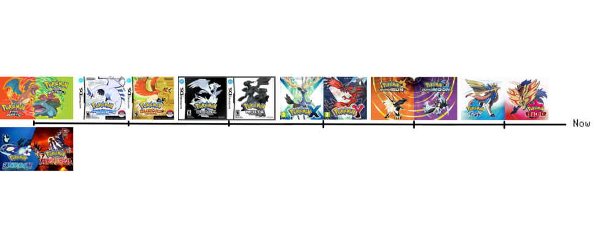

This is my univers
Introduction :
Welcome to my Pokemon world. Below is a small chronological phrise representing past events. For more details the History page can enlighten you.
Introduction :
Arc Pokemon RedFire/GreenLeaf:
The first event of this timeline is the Pokemon's game, Pokemon RedFire or Pokemon GreenLeaf. During this game, Red and Blue start their journey in Kanto,
defeat the Rocket Team and win against the Indigo Elite Four.
Arc Pokemon RubisOméga/SaphirAlpha:
Between Pokemon Origins and Pokemon HeartGold/SoulSilver:
One year after the dissolution of the Rocket Team, Giovanni meet and adopted Léon in Johto, an orphan driven by anger, in which he finds his son. At the same time, Red relinquishes his title of Indigo League Masters to continue his journey. Peter is then appointed to the place of master. Meanwhile, in Sinnoh, a young trainer, Julie, start her journey, wins all eight region badges, defeats the Sinnoh Elite four but loses to Cinthya. After this defeat, Julie decides to leave for Unys.
Pokemon HeartGold/SoulSilver:
Two years after the events of Pokemon Origins, it's the turn of Gold, Célesta, Silver and Christy to start their journey in Johto. During their journey, their defeat the reformed Rocket Team. After that, Gold, Silver and Christy win against the new Indigo Elite Four and his Master. Finally, Gold climbs the Silver Montain and win against Red at the top of the montain. During this time Julie imposes herself as a master at Unys by defeating all the champions, the Elite Four and the master of Unys with ease. However, she renounces the title of master and finds Cinthya in Undella Town to beat her and reset the counters to 0. She then leaves to continue her journey in the Kanto region.
Between Pokemon HeartGold/SoulSilver and Pokemon ROSA:
After the victory of Gold against the Indigo Master (Master of Johto and Kanto), a rich fan of Pokemon battle from Kanto named Morimoto, decided to create the IFPT (International Federation of Pokemon Trainer). This organization aims to organize competitions bringing together trainers from all over the world. At the same time Julie crushes the Kanto champions and decides to continue her journey in the Johto region.
Pokemon ROSA: